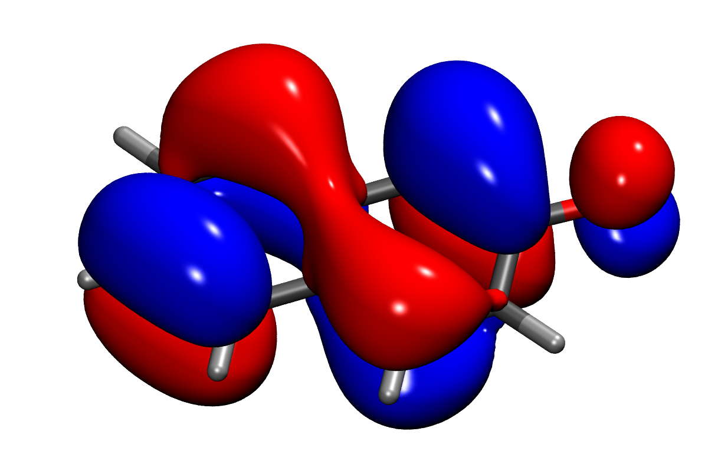
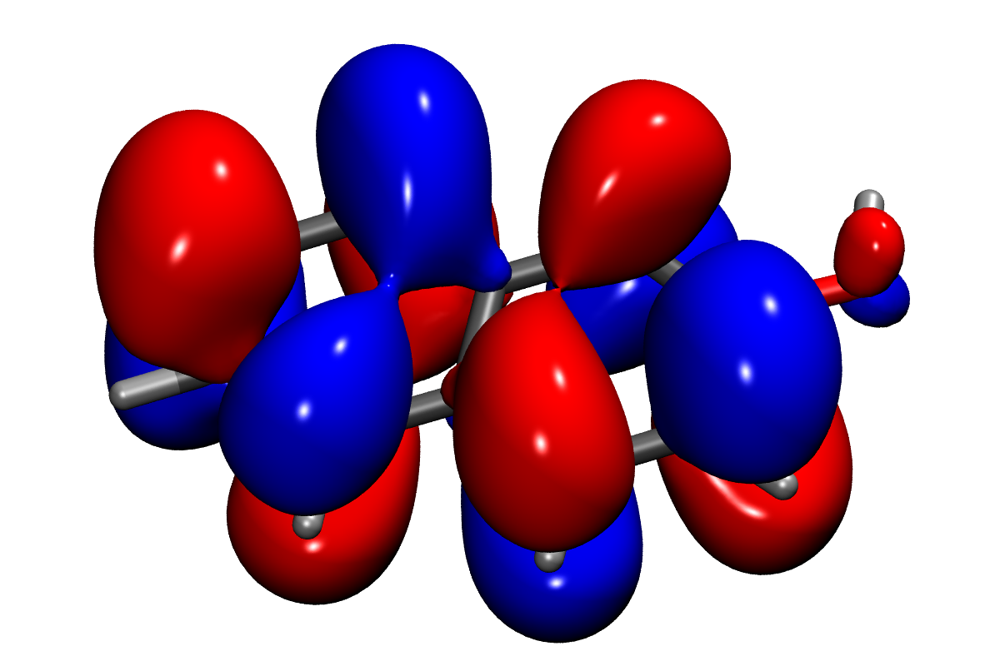
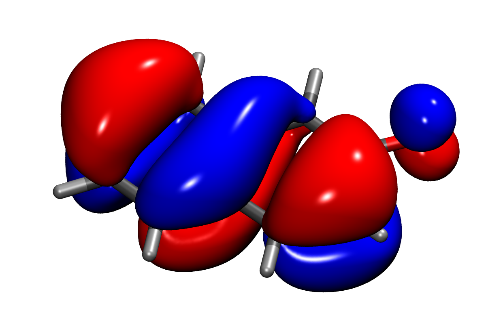
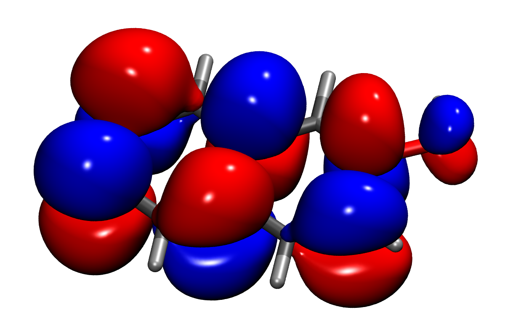
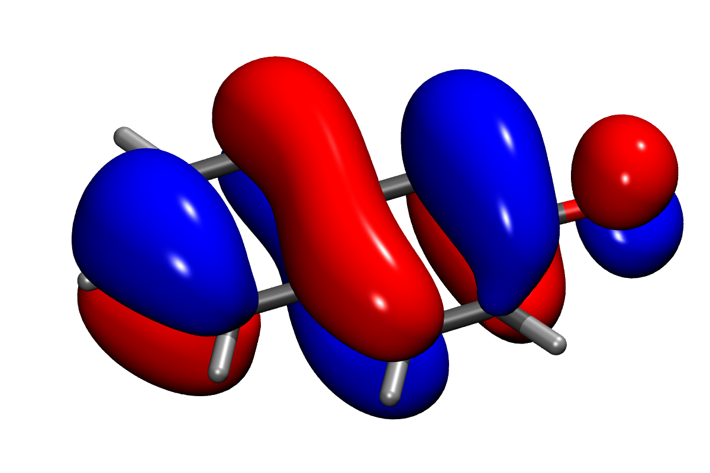
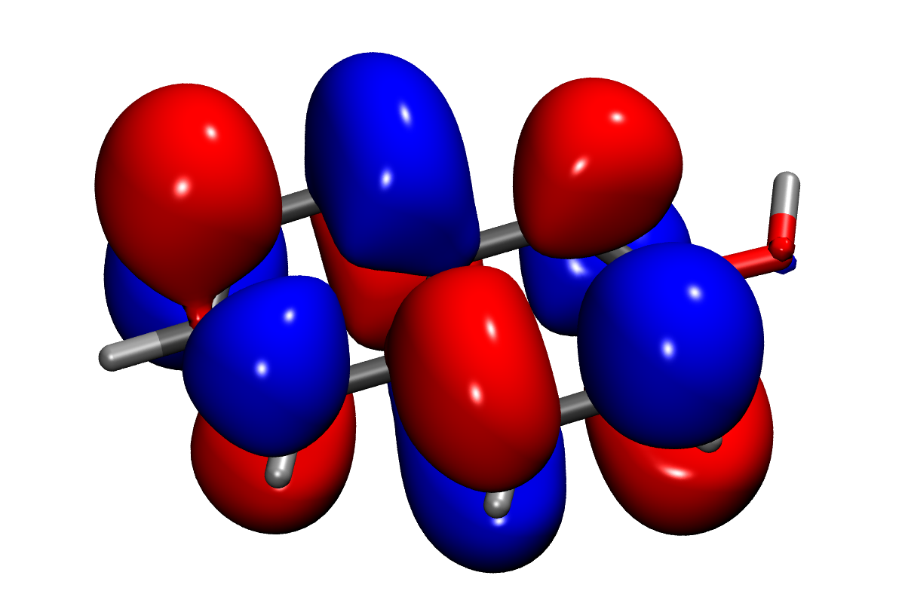
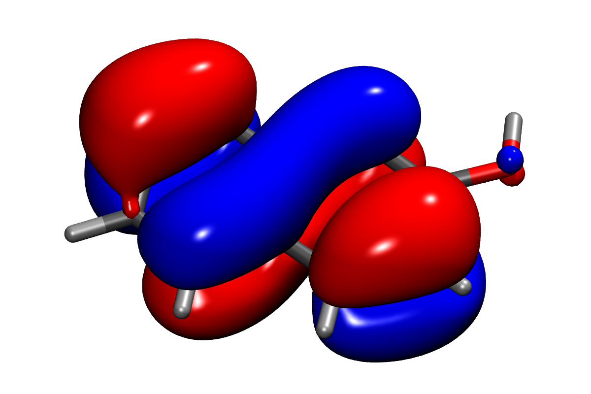
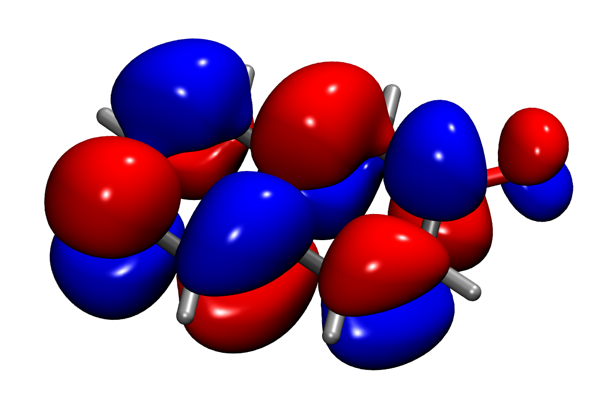

Problem Set 3
Problem 1 [Homework]: Hückel Theory
From quantum mechanics, you’re familiar with the LCAO (Linear Combination of Atomic Orbitals) method for constructing molecular orbitals (MOs). Hückel theory provides a simplified version specifically for conjugated π systems, focusing on the π-electrons that largely determine these molecules’ electronic properties. In this theory, each Hückel MO is built from the atomic orbitals (AOs) of the heavy atoms in the conjugated system:
To obtain the coefficients , we need to solve the Schrödinger equation for each MO . Hückel theory simplifies this quantum mechanical problem by making three key approximations:
- The atomic orbitals are orthogonal:
- The interaction (resonance) integral between bonded atoms is a constant: if atoms and share a bond, and zero otherwise
- All Coulomb integrals are equal: for all atoms
(a) Deriving the Eigenvalue Problem
Show that these approximations reduce the Schrödinger equation to a matrix eigenvalue problem:
where:
- is the Hamiltonian (Hückel) matrix
- contains the orbital coefficients
- is the diagonal matrix of orbital energies
(b) Building the Hückel Matrix
For benzene, construct the Hückel matrix using the following steps:
- Download the molecular structure file benzene.xyz
- Determine which atoms are bonded by calculating a connectivity matrix from the atomic coordinates
- Convert this connectivity matrix into the Hückel matrix by setting:
- Diagonal elements to
- Off-diagonal elements to for bonded atoms
- All other elements to zero
Tip
To calculate the connectivity matrix, you’ll need to:
- Read the coordinates of the heavy atoms from the
xyzfile - Calculate distances between all pairs of atoms
- Set matrix elements to 1 if the distance is below a bonding threshold
To simplify this process, you can use the pre-implemented functions from this utils.py file. By placing it in the same directory as your Jupyter notebook, you can import the functions as follows:
from utils import read_xyz, get_connectivity_matrix
# Read structure (returns list of [atomic_number, x, y, z])
atoms = read_xyz("benzene.xyz")
# Get connectivity matrix (1 for bonded atoms, 0 otherwise)
connectivity_matrix = get_connectivity_matrix(atoms)
(c) Evaluating Atomic Orbitals on a Grid
To construct and visualize the MOs, we first need to evaluate the AOs in 3D space. For the orbital centered on atom , use the unnormalized form:
where is the distance from point to atom at . Note that the orbital is just a real-valued function on . So we would need to evaluate it at a grid of points in 3D space, which can be created using np.meshgrid.
Tip
Creating a 3D grid using np.meshgrid can be very confusing, so here’s a guidline:
- Create three 1D arrays for x, y, and z coordinates. Select the range and spacing of the grid points based on the size of the molecule.
- Use
np.meshgridto create 3D coordinate arrays. See these examples for detailed guidance on usingmeshgridcorrectly. - Note that you will get three separate arrays, which you will use as arguments to evaluate the orbital functions at all points at once.
- Do this for all six atoms in the benzene molecule, and save the AOs in a list.
(d) Calculating Molecular Orbitals
Now we can construct the MOs:
- Calculate orbital energies and coefficients by diagonalizing the Hückel matrix using
np.linalg.eigh - Construct the MOs from the AOs according to equation (1).
Tip
Therefore, first create an empty list, where you will store the MOs. Then, iterate over all six MOs , and for each one, create an empty 3D array. Then, compute the weighted sum of the AOs according to equation (1), again using a for loop.
(e) Visualization (optional)
Save your calculated MOs as Gaussian cube files for visualization. You can view these files using molecular visualization software like Avogadro or IQmol.
Tip
To save the MOs as Gaussian cube files, use the CubeFile class from the utils.py file:
- Initialize a
CubeFileobject with:- The molecular structure (from
read_xyz) - The orbital data (3D numpy array)
- The grid spacing (in Bohr units)
- The molecular structure (from
- Use the
dumpmethod to save to a file - Optionally add comments about orbital energy or symmetry
Here’s how to use the CubeFile class from utils.py:
from utils import CubeFile
# Initialize with atoms, orbital data, and grid spacing
cube = CubeFile(atoms=atoms, data=orbitals[0], spacing=0.2)
# Save to file with descriptive comment
cube.dump("benzene_orbital_1.cube",
comment="Benzene MO #1")
The resulting cube files can be opened in visualization programs like Avogadro or IQmol to examine the orbital shapes.
Problem 2: Natural Transition Orbitals
Now let’s explore what MOs can be used for in applied quantum chemistry and where they fail. In photochemistry, which is the study of the interaction of light with matter, we are typically interested in the electronically excited states of molecules. Many researchers, especially organic chemists, tend to imagine the character of an excited state as a single electron beeing excited from an occupied MO to an unoccupied MO (e.g. a HOMO-LUMO transition). The reality is, however, that a single excited state often involves dozens—or even hundreds—of occupied to virtual orbital transitions with small amplitudes. Notably, a single occupied (or unoccupied) orbital can contribute multiple times to the excited state, meaning that excitonic states are difficult to characterize in terms of MOs. We will now learn about a method that greatly simplifies analysis of these states.
(a) Calculating Molecular Orbitals
To demonstrate this, we will use a different molecule, namely Benzoindol, whose structure you can download from here. Benzoindol has 13 contributing orbitals, resulting in 13 MOs, 7 of which are occupied.
Calculate the Hückel Molecular Orbitals for Benzoindol using your code from Problem 1.
Tip
To modularize the Hückel method, you can organize your code into one or more functions, such as get_Hueckel_energies_and_coefficients, get_AOs_on_grid, and get_Hueckel_MOs_on_grid.
Because nitrogen has a higher electronegativity than carbon, the orbital of nitrogen is lower in energy than the orbital of carbon. Therefore, sometimes the parameter in the Hückel matrix is set to -1.5, instead of 0. Think about how you can incorporate this into your code.
(b) Analyzing the Transition Density Matrix
For a given excited state, the transitions of electrons from occupied to unoccupied orbitals can be organized in a transition density matrix . The elements of this matrix denote the contribution of the -th occupied orbital to the -th unoccupied orbital. Accordingly, the rows denote the occupied orbitals, and the columns denote the unoccupied orbitals.
Download the transition density matrix for the second excited state of Benzoindol from here and load it into your notebook using np.load.
(c) Calculating the Natural Transition Orbitals
Being able to clearly characterize the excited state in terms of independently arising orbital contributions requires the transition density matrix to have diagonal form. Finding a basis in which is diagonal is equivalent to finding the eigenvectors of . Because the number of occupied and unoccupied orbitals, however, can be different, is not a square matrix. This is the case for Benzoindol, where is a matrix (only considering the Hückel MOs). Therefore, instead of eigenvalue decomposition, we resort to singular value decomposition (SVD):
The matrix defines a unitary transformation from the occupied MOs to a set of new orbitals that together represent the hole orbital that is left by the excited electron, while transforms the unoccupied MOs into a set of orbitals representing the excited electron. We call this new set of orbitals Natural Transition Orbitals (NTOs), defined as:
where and run over the occupied and unoccupied MOs, respectively. From this definition, we also see that NTOs and come in pairs, and the corresponding singular value denotes the contribution of the NTO pair to the excited state.
Calculate the NTOs for the second excited state of Benzoindol according to the above definitions, using the SVD of the transition density matrix and the Hückel MOs from Problem 2 (a).
Tip
Calculating the NTOs from MOs is similar to Problem 1: For both hole and electron NTOs, you can use two nested for loops, the first one iterating over the NTOs (columns of and , respectively), the second one iterating over the number of occupied and unoccupied MOs.
(d) Visualization and Interpretation
Visualize the NTOs with the highest contributions and interpret their character.
Real-World Application: 2-Naphtol
The calculations are performed at the ωB97X-D4/def2-TZVP level of theory as implemented in the ORCA 6.0.1 software package.
In the practical course of physical chemistry, you were asked to calculate the value of 2-naphtol in its first electronically excited singlet state (S1) using UV absorption and fluorescence spectroscopy. A comparison of the value in the ground state and the S1 state shows that 2-naphtol becomes more acidic in the excited state. You were asked to explain this observation.
An reasonably simple explanation can be given using resonance. If one assumes that the weakly contributing resonance structures in the electronic ground state become more important in the excited state, one arrives at an excited state of 2-naphtol with more positive charge on the oxygen atom, thus leading to a easier deprotonation and a lower value. This assumption, however, is difficult to justify using chemical intuition alone. Furthermore, one does not for which excited state(s) the resonance structures become more important.
A more rigorous approach is to calculate the electronically excited states of 2-naphtol and the change of the electronic density upon excitation. The 4 frontier orbitals involved in the excitation are shown below.
| HOMO (H) | LUMO (L) |
|---|---|
 |  |
| HOMO-1 (H-1) | LUMO+1 (L+1) |
|---|---|
 |  |
The S1 state consists of lots of configurations, with the most important four being
| transition | coefficient | contribution / % |
|---|---|---|
| H-1 → L | -0.449 | 20.1 |
| H-1 → L+1 | 0.326 | 10.6 |
| H → L | 0.684 | 46.8 |
| H → L+1 | 0.439 | 19.3 |
Note that the HOMO-LUMO transition, which is commonly used as an approximation for the S1 state, accounts for less than 50 % of this transition. More importantly, interpreting a state according to a mixture of four different configurations is rather difficult.
This is where NTOs become handy. By performing SVD on the transition density matrix, just as you did in Problem 2, we obtain just two important NTO pairs, which are visualised below.
| HONTO | LUNTO |
|---|---|
 |  |
| HONTO-1 | LUNTO+1 |
|---|---|
 |  |
We can thus interpret the S1 state using just two transitions
| transition | contribution / % |
|---|---|
| HONTO → LUNTO | 73.0 |
| HINTO-1 → LUNTO+1 | 24.8 |
Now let us take a look at the first NTO pair. By squaring the NTOs in your head (alternatively, just ignore the sign), we arrive at something that shall be called “natural transition density”, which shows how electrons are distributed before and after the excitation. The occupied NTO shows the density that is removed by the excitation, while the virtual NTO shows the density that is created by the excitation. Therefore, HONTO → LUNTO clearly shows a transfer of electronic density from the oxygen atom to the naphthalene, making the O atom more positively charged in the S1 state.
Although the HONTO-1 → LUNTO+1 shows a transfer of electronic density from the naphthalene unit to the oxygen atom, its contribution is smaller than the first NTO pair (and the transfer is weaker as can be seen from the figures above). Therefore, the first NTO dominates the character of the S1 state and we arrive at a rigourous explanation for the higher acidity of 2-naphtol in the S1 state.